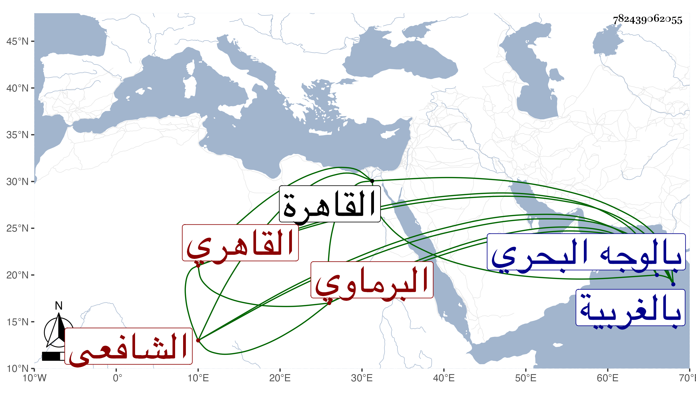

0902Sakhawi.DawLamic.ITO20230111-ara1.EIS1600.782439062055
Biography ID: 782439062055
436
عثمان بن إبراهيم بن أحمد بن عبد اللطيف بن نجم بن عبد المعطي الفخر أبو محمد البرماوي نسبة إلى برمة بلدة بالغربية من أعمال القاهرة بالوجه البحري ثم القاهري الشافعي أخو عبد الغني ووالد الشهاب أحمد . ولد بعد سنة ستين وسبعمائة واشتغل بالفقه والعربية والقراءات ومن شيوخه فيها الفخر البلبيسي الإمام والشمس العسقلاني تلا عليه للعشر وأثبتها له ابن الجزري مع قراءته على الفخر وكانت في سنة ست وثمانين وسبعمائة وولي تدريسها بالظاهرية القديمة بعد الفخر شيخه وكان نبيها فيها وفي العربية ، ممن سمع الحديث كثيرا ورافق شيخنا في بعض ذلك . بل استملى بعض المجالس على الزين العراقي وكتب الطباق وبعض الأجزاء ، وناب في الحكم عن البلقيني وجلس في حانوت الجورة وكان من جماعة الشهود فيه حينئذ جدي لأمي وتلا عليه شيخنا الزين رضوان بعض القرآن بالسبع وبحث عليه في شرحي الشاطبية للفاسي والجعبري وأجاز له ، وقال شيخنا في معجمه أنه سمع بقراءته بل سمع صاحب الترجمة منه . ومات فجأة بعد خروجه من الحمام في سابع عشر شعبان سنة ست عشرة ولم يكمل الخمسين فيما قاله شيخنا مع قوله أنه ولد بعد الستين ، وهو في عقود المقريزي رحمه الله وإيانا .
